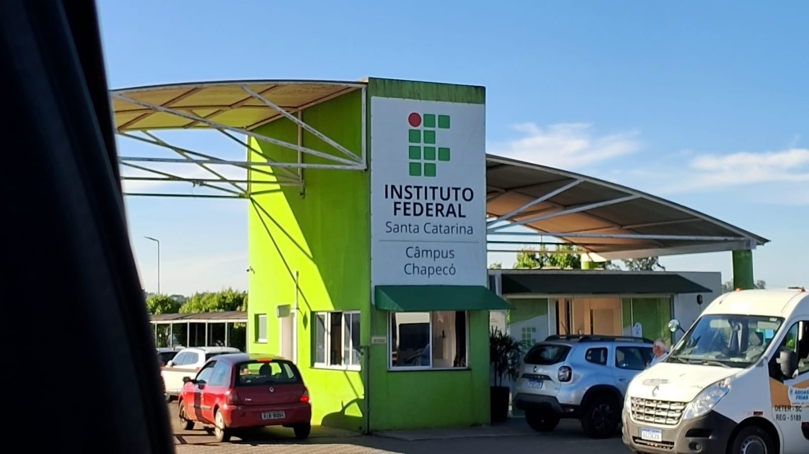
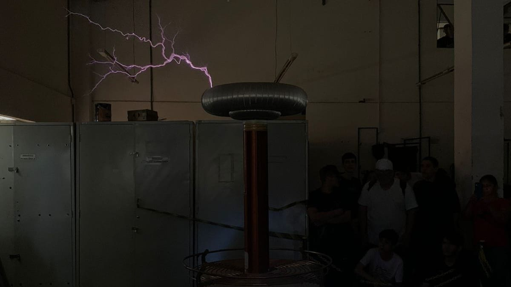
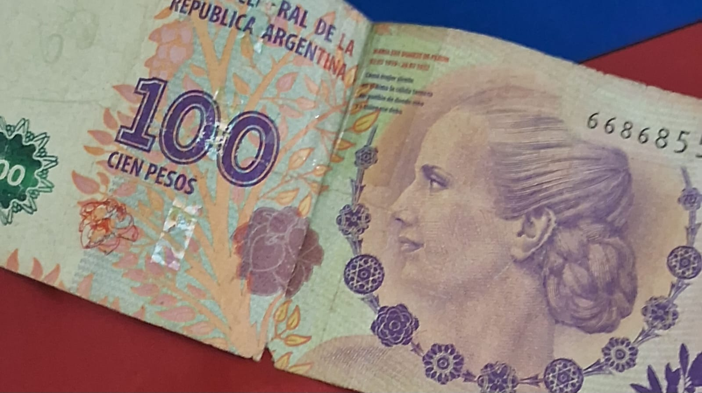
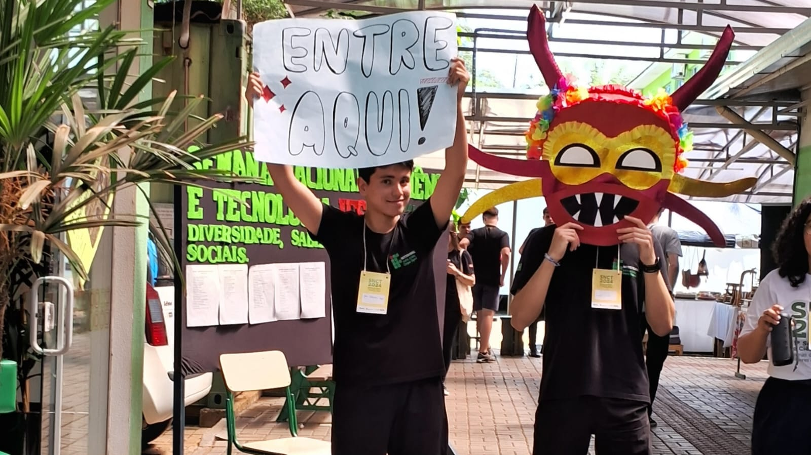
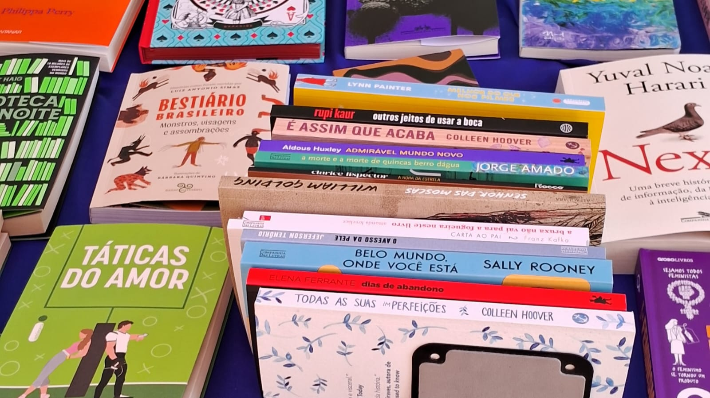
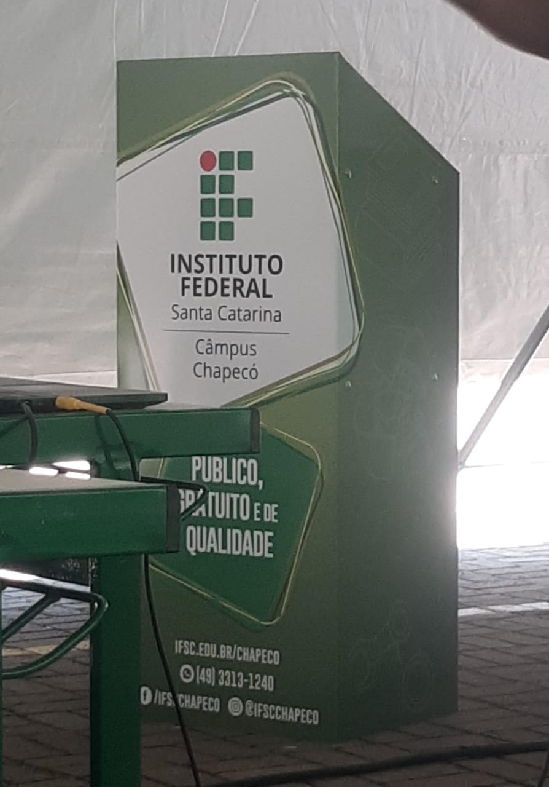
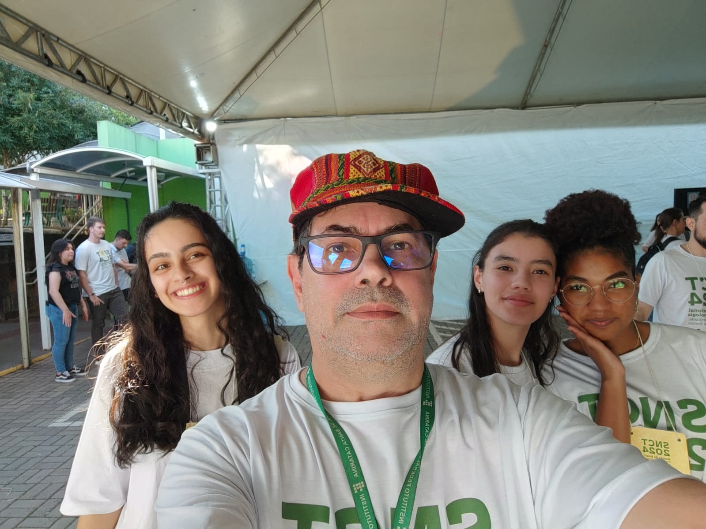
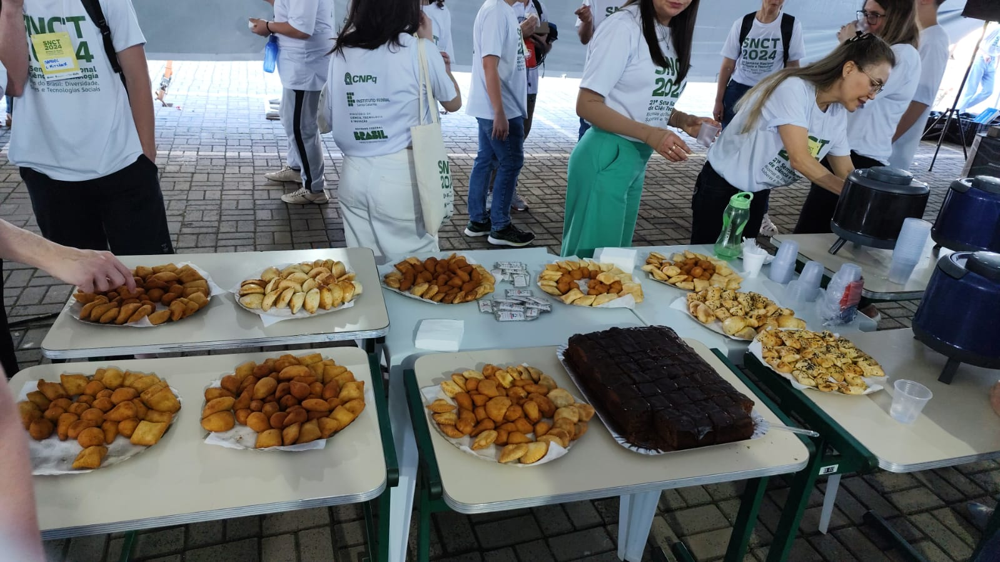

SNCT
Semana Nacional de Ciências e Tecnologia

Clique aqui para ir para a seção de Informações
Atividades
- Bobina de tesla
- A bobina de tesla foi um projeto desenvolvido pelo IFSC câmpus
Xanxerê, onde um grupo de alunos entrava em uma sala e a bobina era ligada. Foi explicado
como a bobina funciona, bem como os tipos de raios que ela emitia.
-
.

- Feira das nações
- A feira das nações foi uam ideia da professora de português
do campus de Chapecó, essa teve como intenção apresentar
a diversidade dos paises que tem a lingua espanhola como oficial
-
.


-
.
- Vendas
- Durante o evento, diversos comerciantes da cidade apresentaram seus
produtos para venda. Brincos, livros e velas aromáticas foram alguns
dos itens apresentados.

Intervalo Cultural
Durante todos os intervalos que houveram na SNCT, sempre havia
uma banda tocando. As bandas eram compostas por alunos do Instituto Federal, trazendo um
momento animado e descontraído durante o evento.

Intervalo Cultural
Guias
Alguns alunos dos cursos foram selecionados para auxiliar na
SNCT, esses eram chamados de quias, tinham a função de
fiscalizar, guiar, listar, entre muitas outras.

Esses também receberam lanches ao final da semana de atividades

Site oficial do IFSC Chapecó da SNCT
Site oficial da SNCT